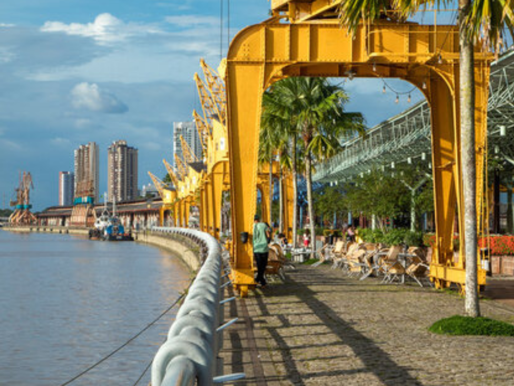

O Pará é um dos estados mais importantes da região Norte do Brasil, conhecido por sua vasta riqueza natural, cultural e econômica. Cortado por grandes rios da Bacia Amazônica, o estado possui extensas áreas de floresta e uma biodiversidade impressionante. Sua capital, Belém, é famosa pela forte influência cultural amazônica, pelo mercado Ver-o-Peso e pelas tradicionais festas religiosas, como o Círio de Nazaré. A economia paraense se destaca pela mineração, agricultura, pesca e produção de energia, além do crescente turismo ecológico. A cultura do Pará é marcada pela música, danças típicas e uma culinária muito apreciada, com pratos tradicionais como pato no tucupi e tacacá.
